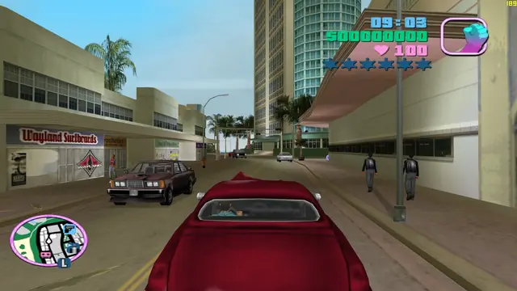
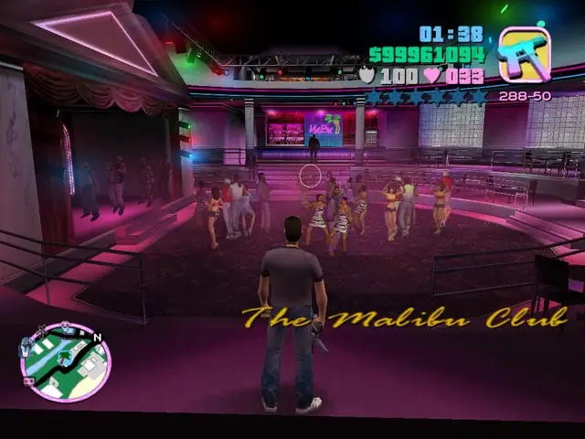
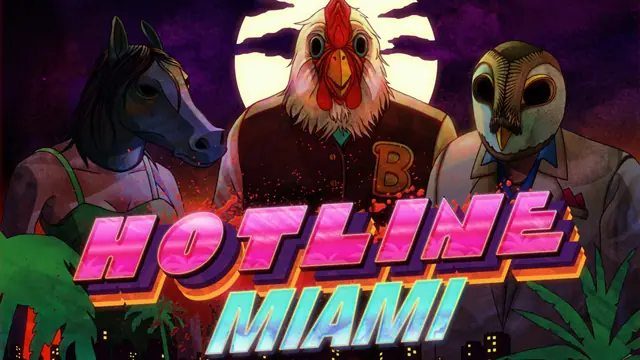
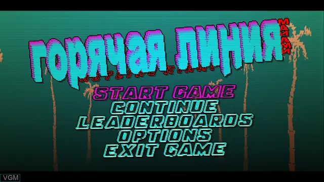
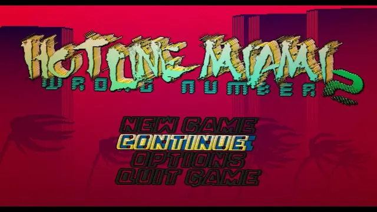
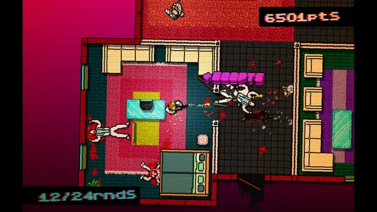
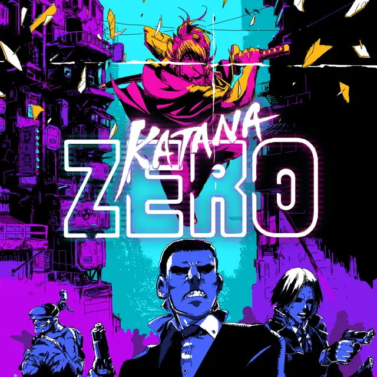
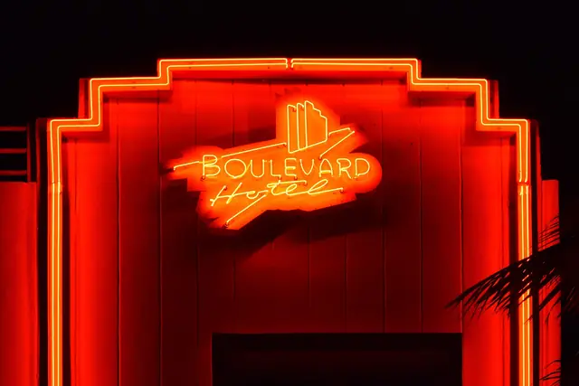
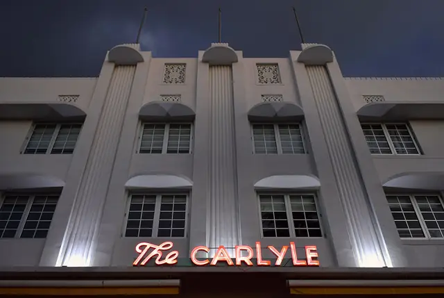
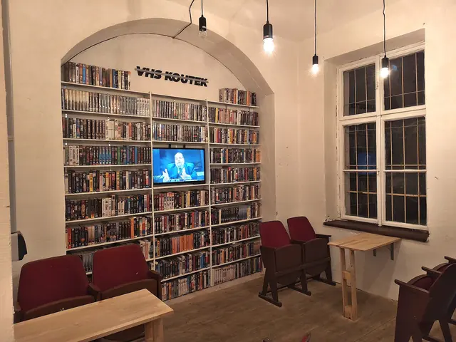

The feel
VHS Pop is Miami in the mid-1980s as crime television sold it: two undercover detectives in pastel designer jackets and linen trousers, a Ferrari, and a look that mixes hard-boiled police work with hard partying.1 Michael Mann wanted those pastels to "generate a feeling of heat".2 Sam Houser, executive producer of Grand Theft Auto: Vice City, called it "the grooviest era of crime because it didn't even feel like it was crime".3
The tape is part of the memory. A video starts with a shiver of interference and blocky text such as PLAY at the edge of the screen, then the picture twitches and settles into motion.4 A rented tape wore out where people had replayed and rewound their favourite moments, so its damage was a record of other viewers' attention.5 Adding that damage digitally is deliberate imperfection: it simulates an ageing that has not happened and never will.5
- nocturnal
- pastel
- dangerous
- over-rented
- air-conditioned
- cash only
Where it comes from
The look comes from Miami as film and television showed it in the mid-1980s. Giorgio Moroder's synth-driven score runs through Brian De Palma's Scarface (1983),6 and Miami Vice, which ran from 1984 to 1989, was shot almost entirely on location under Michael Mann's directive of "No earth tones".1 Sam Houser named Miami Vice as the strongest influence on Grand Theft Auto: Vice City (2002),3 and Hotline Miami (2012), a trip through 1989 South Florida, was first named after the documentary Cocaine Cowboys.7 The tape damage is a later layer: Kung Fury (2015), set in an imaginary Miami in 1985, was made to look like an old rental copy played countless times.8
Core elements
Pastel palette with neon at night
Mann's rule for Miami Vice's wardrobe was "No earth tones, no red", and its costume designer matched clothes to each location so that nobody wore peach against a peach wall.2 Neon carries the other half. South Beach's Deco hotels announced themselves with neon signs,9 and Sam Houser, who used Miami Vice as the template for Vice City, singled out Mann's colour and night lighting.3
Art Deco hotels and palm trees
South Beach's hotels from the 1930s and 1940s are the set: streamlined curves, jutting towers, rounded corners, window "eyebrows", porthole windows and neon.9 Their pastels came later, when Leonard Horowitz repainted many of them in the colours of tropical sunsets and sea-foam green to bring out details hidden under white and beige.10 Miami Vice's opening titles add the beaches, palm trees and flamingos.1
Glamorised crime
The money is part of the costume. Clothes and cars taken from indicted criminals went to local police so undercover officers could pose as high-level dealers, which is why Crockett and Tubbs dressed as they did and drove a Ferrari.2 Moroder's Scarface score catches "the glamour and vice of 80s Miami in equal measure",6 and Edward James Olmos called Miami Vice "a glamorized and romanticized production".2
Tape damage
A worn tape shows low resolution, dropout, tracking lines and a subtle rainbow effect.8 For Kung Fury, the effects team recorded a feed from an old VHS player to get the rolling bar and the look of a dirty playback head.8 Head switching adds a band of sideways-shifted rows, with some static, at the bottom of the image.11
Video rental cover art
Hotline Miami's developers asked for "a cover in a VHS kinda style".12 Niklas Åkerblad, who made it, posed the characters as generically as 1980s covers did and used the cover to fill in what the game's low-resolution sprites could not show.12 The poster artist Tom Hodge, who gathered over 240 sleeves in a book, still sees the video shop aisles as "a sort of twisted pop art gallery".13
Synth-driven score
For the first three seasons, Jan Hammer wrote and recorded Miami Vice's music alone in his home studio, one episode a week, using sequenced synth patterns, power drums and synth patches that mimic rock guitar.14 The theme, built from Memorymoog bass samples sequenced on a Fairlight, reached number one on the Billboard Hot 100.14,1 The pilot's best-known scene plays Phil Collins's "In the Air Tonight",1 a song born from Hugh Padgham's gated-reverb drum sound.15
How to do it
Set day and night colours
Build the street once and give it two looks. By day, follow Miami Vice's rules: no earth tones on set,1 no earth tones or red in the wardrobe, and no costume that matches the wall behind it.2 By night, let a neon sign announce each building, the way the cobalt blue neon of the Breakwater Hotel conjures the colours of the sea.9
Model a kit of Deco parts
Model the parts the real buildings share: streamlined curves, rounded corners, jutting towers, window eyebrows, porthole windows and neon.9 Swooping balconies and ziggurat doorways add variety.10 Then paint it the way Leonard Horowitz painted South Beach, with the architectural features "highlighted through color so that anyone passing by could see the shapes".10
Work at 480 lines
NTSC video has only 480 lines of vertical resolution, so apply the tape effect to a 480-line image and scale up afterwards.16 Cut the high frequencies the way a tape recorded at SP, LP or EP speed does (start from LP), and low-pass filter the colour on the way in.11
Add the head-switching band
VHS head switching leaves a band at the bottom of the image with its rows shifted sideways.11 Make it about 8 lines tall, with 3 of them off-screen, and start it mid-line with some static.11 Keep the rest of the frame nearly still, with a horizontal wave of about half a pixel.11
Use tracking noise sparingly
Scroll this page fast to see some, then press Rewind at the bottom. Kung Fury breaks its picture at "strategically placed moments", with dropout over the first fight and tracking lines when the time machine glitches.8 Make the tracking-noise band about 12 lines tall and let its rows wave back and forth.11
Paint the cover and menus
Paint the box art in the generic poses of 1980s video covers, and let it show what your sprites can only suggest, as Niklas Åkerblad did for Hotline Miami.12 For menus, draw your own on-screen display of play and pause icons, text and a timecode, because each model of VCR drew its own.17
Write a synth score
Hammer built the Miami Vice theme from Memorymoog bass sounds sampled into a Fairlight, with three bass tracks arranged on its sequencer.14 He over-programmed the percussion and then removed parts to find new textures, and checked his mixes on a small mono cassette recorder as well as studio monitors, since getting depth across on a TV, he said, is hard.14
Cheat sheet
Do
- Match costumes to each location so characters never blend into the wall behind them.2
- Pick out architectural details with colour, as Horowitz did on South Beach.10
- Let music carry whole scenes. The Miami Vice pilot plays "In the Air Tonight" over a Ferrari drive with almost no dialogue.1
- Open a scene the way a tape does: a shiver of interference, then a picture that twitches and settles.4
Avoid
- Earth tones, red and beige. Mann kept the first two out of Miami Vice's wardrobe, and remembered the city before the show as "war-surplus beige".2
- A generic score. Mann told Hammer he did not want "generic TV drama music".2
- Constant breakdown. Kung Fury's picture breaks down at strategically placed moments, such as its first fight.8
- Scaling up before the tape effect. At 1080p the effect runs much slower and gives sub-par results.16
- A colour lookup table and an overlay. They only eyeball the look of VHS. Model how NTSC transmission and VHS encoding actually work instead.18
Tools and tutorials
- ntsc-rs
A free, open-source emulation of analogue TV and VHS artefacts, as an app, a web app or an editing plugin.18
- Chow Tape Model
A free tape emulation effect. The ntsc-rs developer recommends it for realistic VHS audio.17
- Realistic VHS with ntsc-rs
A three minute walkthrough of the settings that matter.
- Turn your video into a VHS tape
Film Riot's guide to doing it by hand in post-production.
- VCR OSD Mono
A free font based on on-screen VCR text, for your menus.
Palette
Pink, plum, mint and yellow are from the Hotline Miami Collection art, peach from Katana ZERO's highway, neon and night from Vice City, and blue from the Streets of Rage 2 painting.
Feel the vibe
Listen
Dance music for very bad people. Hear how the club beat keeps the violence moving.
YouTubeTense, cold and impossible to shift.
YouTubeKoshiro made Streets of Rage 2's music more techno than the first game's, from what he heard in Tokyo clubs.19
YouTubeSets the whole period in about a minute.
YouTubeA modern take, recorded mostly as jams on old analogue synths and drum machines.20
YouTubeHammer playing the theme live. The studio recording reached number one on the Billboard Hot 100.1
YouTube
More references










Games
- Grand Theft Auto: Vice City
Study the sky, the radio and how one palette changes through the day. Rockstar used Miami Vice as its template.3
- Hotline Miami
Study the menus, the transitions and the colour. It is set in 1989 South Florida, and its cover was made in a VHS style.7,12
- Far Cry 3: Blood Dragon
Study its over-saturated neon. Creative director Dean Evans wanted to capture "that VHS era" of the mid to late 1980s.21
- Hotline Miami 2: Wrong Number
Compare its menus and the way it frames each level with the first game's.
- Katana ZERO
Watch what happens when you fail. Its hero takes a combat drug that lets him rewind time.20
Film, art and more
- Miami Vice
Pastel designer jackets, location shooting in Miami and Jan Hammer's chart-topping theme.1
- Scarface
Giorgio Moroder's synth-driven score, and the glamour and vice of 80s Miami.6
- Miami Beach Architectural District
The real buildings: eyebrows, portholes, rounded corners and neon.9
- VHS
How the tape records, and why the picture fails the way it does.
- Video rental shop
The other half of the memory: the shelves, the boxes and the late fees.
Sources
- 1Miami Vice: American television series
- 2Miami Vice at 40: An Oral History
- 3Grand Theft Auto: Vice City Anniversary- Executive Producer Discusses The Game’s Influences
- 4Video in demand? The nostalgic appeal of VHS
- 5Analogue Nostalgia and the Aesthetics of Digital Remediation
- 6Scarface (Focus on Giorgio Moroder)
- 7The S+V Interview: Devolver Digital's Nigel Lowrie Talks Hotline Miami
- 8Analogue Video in the Age of Retrospectacle: Aesthetics, Technology, Subculture
- 9Deco Miami Beach
- 10Leonard Horowitz – The King of Art Deco (1988)
- 11Filter: openfx.wtf.vala^NtscRs
- 12Meet the Artist Who Brought the Game ‘Hotline Miami’ Out of 2D
- 13Tom Hodge Interview: Author of ‘VHS: Video Cover Art’
- 14Miami Nice Guy
- 15Hugh Padgham on how he created the gated-reverb effect and evolving technology
- 16OpenFX Plugin
- 17Frequently Asked Questions
- 18ntsc-rs
- 19Interview: Streets of Rage Composer Yuzo Koshiro
- 20On the “Katana ZERO” Score, Synthwave Goes Neo-Noir
- 21How cheesy '80s movies shaped Far Cry 3: Blood Dragon